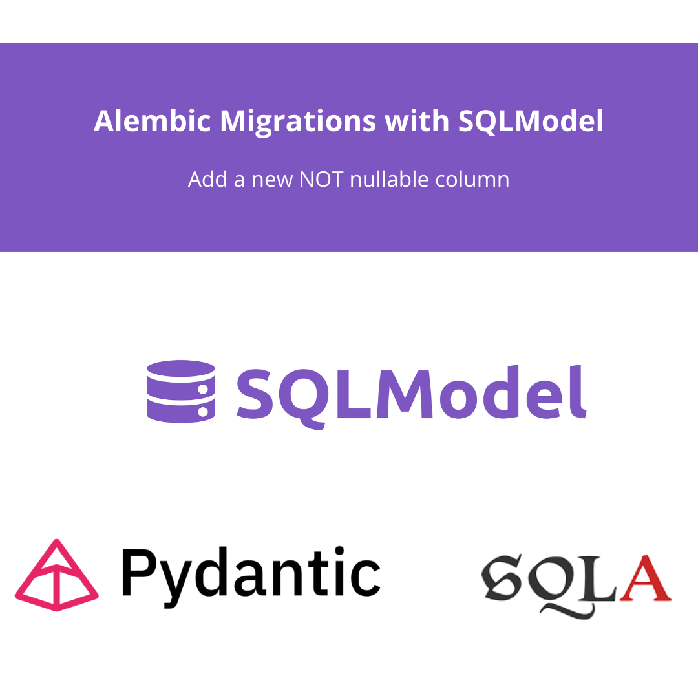

SQLModel and Alembic migrations? They’re like a power duo in the whole database game. SQLModel is a quite new library for defining data models, combining Pydantic and SQLALchemy. It is true that SQLALchemy v2 addresses common spots. But if you’re in the FastAPI and Pydantic ecosystem, it’s worth to give a try. It feels so natural! On the other hand, Alembic, well, it’s your go-to database migration tool in Python. When you put them together, managing your database schema becomes a whole lot smoother. Today, we’re diving into a cool move: adding a not nullable column to your database tables.
But first of all, if you come from the Data Analytics or Data Science world, you could be asking…
When you’re managing a production service database, you would need to be sure database status is stable, robust and changes are trackeable. Imagine you want to add a new column to an existing table. You better have a Python model (SQLAlchemy or SQLModel) specifying its characteristics (type, nullable, default value…). Also, you need to keep track of the previous database status, the delta change of adding the column, and the way to revert to previous database status if needed. This features are often avoided in beginners / PoC data science / analytics projects, but it comes as mandatory if you want to step up your project robustness and quality.
Alembic, in particular, is like the cool maestro in this orchestra. Alembic creates and tracks migration scripts, which are like roadmaps for your database’s journey. This way, you can make changes without losing your data’s integrity. So, whether you’re giving your database a makeover with fresh features, fixing those pesky bugs, or just keeping everything neat and tidy, a tool like Alembic is your trusty sidekick in the world of data-driven projects.
You can check the Alembic starting guide as a first step. The basic commands are:
# init the alembic project
alembic init alembic
# add a revision (a database change)
alembic revision -m "Add updated_at column"
# sync the database status to the last revision
alembic upgrade headImagine you have this SQLModel object, representing a database entity.
import datetime
from pydantic import BaseModel
from sqlmodel import SQLModel, Field
from enum import Enum
class ListingAddress(BaseModel):
country_code: str
nuts3_region: str
postal_code: str
class ListingType(Enum):
SALE: 'sale'
RENT: 'rent'
class Listings(SQLModel):
id: int = Field(primary_key=True)
address: ListingAddress
listing_type: ListingType
listed_price: float
tags: list[str] | None = Field(default=None, nullable=True)
user_rating: float | None = Field(default=None, nullable=True, ge=0, le=5) # new nullable column
created_at: datetime.datetimeImagine you want to add a new column. Let’s add two of them. One nullable (called user_rating) and other not nullable (updated_at). In the SQLModel object it should be easy and you could do it like:
class Listings(SQLModel):
id: int = Field(primary_key=True)
address: ListingAddress
listing_type: ListingType
listed_price: float
tags: list[str] | None = Field(default=None, nullable=True)
user_rating: float | None = Field(default=None, nullable=True, ge=0, le=5) # new nullable column
created_at: datetime.datetime
updated_at: datetime.datetime # new NOT nullable columnNote that the default Field``nullabe value is False. A good practice would be to add Fields to all, adding descriptions and some metadata. In this example we used Field just as needed to make it primary_kay or nullable.
By adding this new field, and running the Alembic revision, a new column would be added. Let’s check that the two different new fields would have different impact in the database migrations.
As we have seeing in the previous paragraph, it is quite simple to add a new field to the SQLModel. After running the Alembic migrations, we would have:
"""Add listings updated_at field
Revision ID: d23aa9jc7d5p
Revises: cc9a661c7f9f
Create Date: 2023-10-30 00:00:00
"""
import sqlalchemy as sa
from alembic import op
# revision identifiers, used by Alembic.
revision = "d23aa9jc7d5p"
down_revision = "cc9a661c7f9f"
branch_labels = None
depends_on = None
def upgrade() -> None:
# ### commands auto generated by Alembic - please adjust! ###
op.add_column(
"listings",
sa.Column("user_rating", sa.Float(), nullable=True),
)
# ### end Alembic commands ###
def downgrade() -> None:
# ### commands auto generated by Alembic - please adjust! ###
op.drop_column("listings", "user_rating")
# ### end Alembic commands ###Would you like to add default values to previous rows for this new column? Usually, what you use with SQLModel / SQLAlchemy is the default_generator argument. It looks like:
op.add_column(
"listings",
sa.Column("user_rating", sa.Float(), nullable=True, server_default="0.0"),
)But, is it possible to add a new column not nullable and fill the past records with other columns?
But what if the column should be not nullable?? It throws an error in the running the migration cause of course the existing database has not the column, so creating it would create null values.
If you want to fill the null values with other columns values, an easy way to do it is to have the following Alembic migration file:
"""Add listings updated_at field
Revision ID: d23aa9jc7d5p
Revises: cc9a661c7f9f
Create Date: 2023-10-30 00:00:00
"""
import sqlalchemy as sa
from alembic import op
# revision identifiers, used by Alembic.
revision = "d23aa9jc7d5p"
down_revision = "cc9a661c7f9f"
branch_labels = None
depends_on = None
def upgrade() -> None:
# ### commands auto generated by Alembic - please adjust! ###
op.add_column(
"listings",
sa.Column("updated_at", sa.DateTime(), nullable=True),
)
op.execute(
"""
UPDATE listings
SET updated_at = created_at
WHERE updated_at is NULL;
"""
)
op.alter_column("listings", "updated_at", nullable=False)
# ### end Alembic commands ###
def downgrade() -> None:
# ### commands auto generated by Alembic - please adjust! ###
op.drop_column("listings", "updated_at")
# ### end Alembic commands ###It is not auto-generated by the SQLModel object, but it is still easy to achieve.
Hopefully, this post has helped you getting and overview on SQLModel and Alembic. Also, how to add not nullable columns while using SQLModel and Alembic.
If you want to stay updated…